Sid Meier's Civilization V (called Civilization V or Civ5 for short) is a turn-based strategy game released on September 21, 2010. The game's first expansion pack, Gods & Kings, was released on June 19, 2012 in North America and June 22, 2012 elsewhere. A second expansion, Brave New World, was released on July 9, 2013 in North America and July 12, 2013 elsewhere.
Civilizations & Leaders
Majapahit Logo
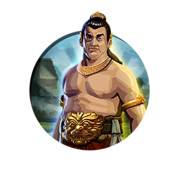
Gajah Mada
There are eighteen civilizations available from the start of Civilization V, and seven additional civilizations are made available later through several small DLC add-ons. Nine more civilizations were added with the Gods & Kings expansion pack, and nine other civilizations were added with the Brave New World expansion pack, bringing the total number of civilizations to 43, the greatest number of civilizations that has ever been available in any Civilization game.
This is the first incarnation of the series where the leaders speak in their native language in a fully animated diplomacy screen. This only applies to the audio; all text is in the language selected.
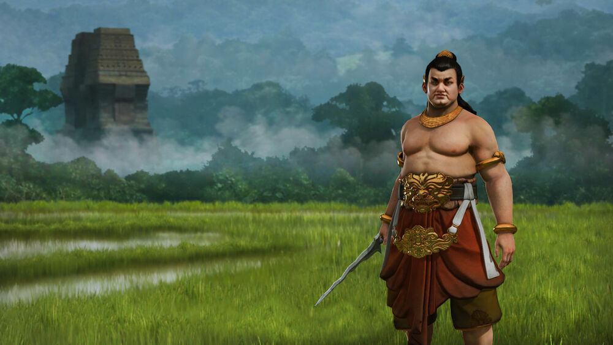
Gajah Mada Ingame
Units
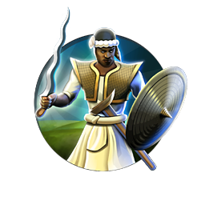
Kris Swordman
Civilization V has 87 units, ranging from military to civilian. Unlike in previous games, you can have only one unit of each type (Military/Civilian/Embarked) per hex. For example, you cannot have a Horseman and an Archer on one tile. This also applies to cities.
Most units can move 2 hexes (4 hexes for mounted units) and are no longer destroyed if they lose a battle, taking damage instead. Players can swap a unit out with one next to it during battle.
Units take longer to produce than in previous games. They also have higher upkeep costs, potentially reducing the number of units you can maintain at one time. The upkeep costs become more expensive the further you are into the game.
There are no longer troop transports. Instead, units instantly transform into makeshift floating transports when moving into water after the Optics technology is researched.
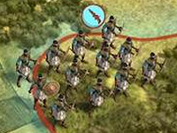
Kris Swordman Ingame
City-States
One new concept in the game is the addition of CityStateIcon5.png city-states - small countries usually limited to a single city, that don't compete to win the game. However, they can expand their territory and acquire the same resources as any player can. They provide economic and diplomatic bonuses if you befriend or ally them by doing quests or giving gifts. If you are hostile toward a city-state, its allies become hostile towards you.
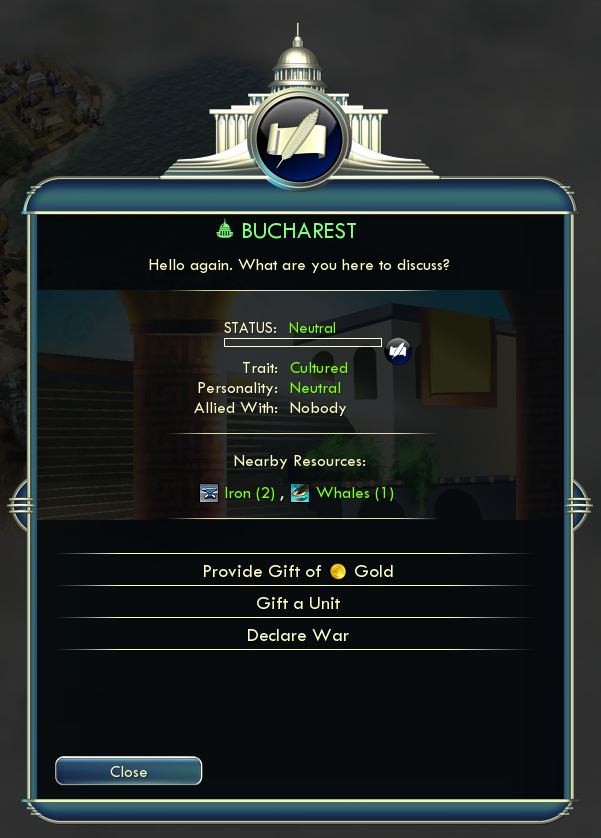
City States Ingame
Terrains
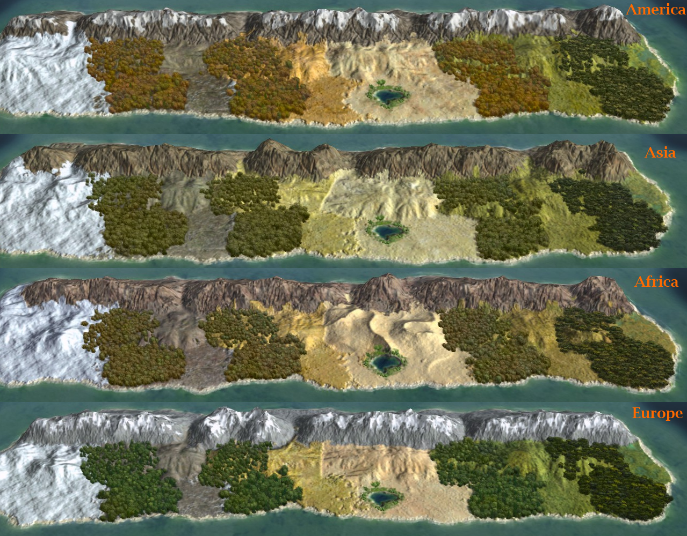
Terrain Ingame
Plain terrains
Grassland, marsh, plains and desert
Cold terrains
Snow and tundra
High terrains
Mountains (are impassable to all units except helicopters and Carthaginian troops, after Carthage earns its first Great General) and hills (provide more defense and negate the effect of obstacles such as trees for ranged units)
Water terrains
Coast, ocean, lakes and rivers (affect those attacking across them and use up all movement points)
Forest/Jungles
There are several types of forests/jungles representing the four major land masses. Wounded units can hide and recover in trees/forests.
Resources
There are three types of resources: strategic resources, luxury resources and bonus resources. If you have more than 1 luxury resource, you can trade the excess with other civilizations. However, the same does not hold true for strategic resources. A single Iron deposit, for example, yields between 2 and 9 Iron resources letting you build that number of units that require 1 Iron resource. Therefore, acquiring as many strategic resources as you can is a must to support large armies.
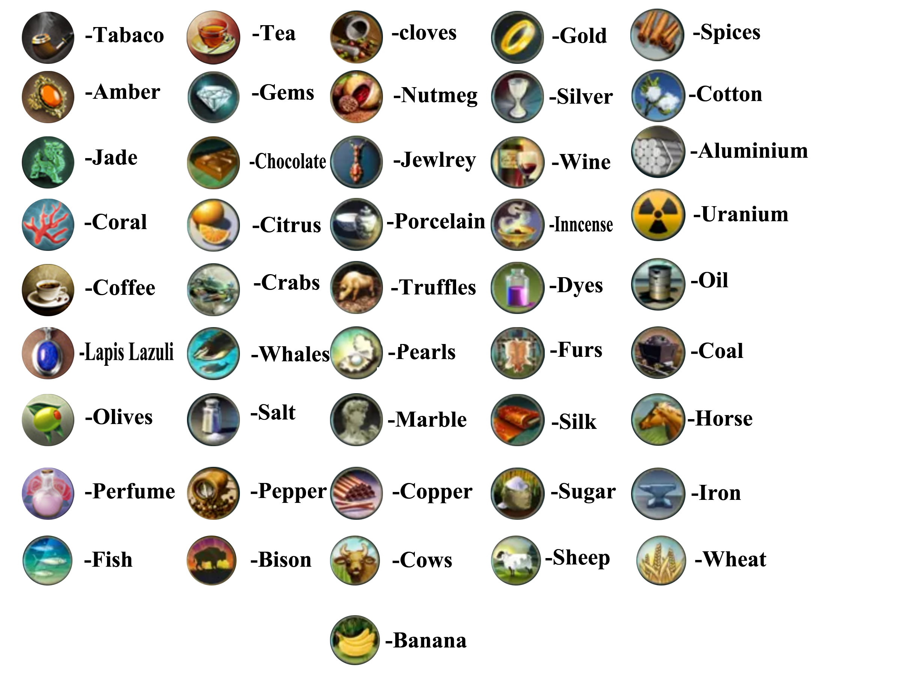
Resources List
Buildings & Improvements
Library
Civilization V has 71 buildings, 49 wonders, and 23 improvements. The number of unique buildings is included in the building count. Note that not every civilization has a unique building: some have a unique improvement or two unique units instead.
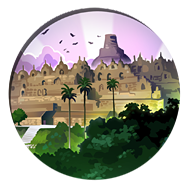
Borobudur Logo
Wonders come in the form of world wonders, national wonders and projects, just like in Civilization IV. The concept of tile improvements has been modified slightly: in addition to Workers and Work Boats, the Great People can now construct special improvements (or "bulb") too.
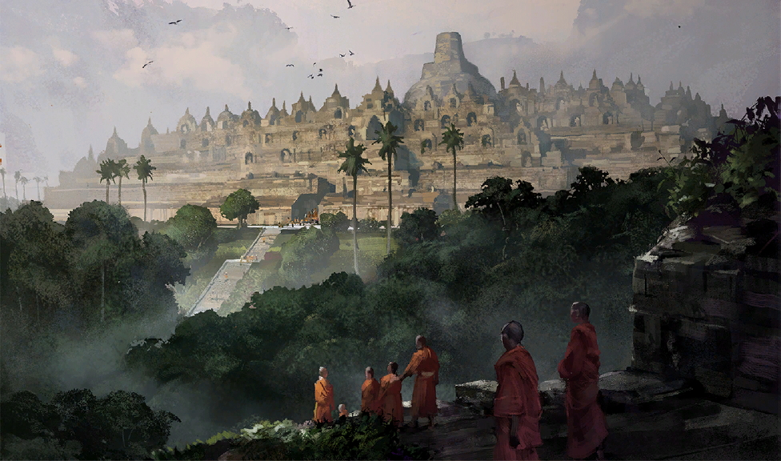
Borobudur Build Complete
Great People's special tile improvements replace any improvements already built on them. Roads can go through these special improvements, and they automatically hook up any strategic resources on those tiles.
Great Merchants can build a Customs House, which increases Gold Gold income.
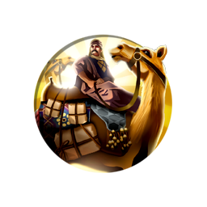
Great Merchants
Great Engineers can build a Manufactory, which boosts a tile's Production Production.
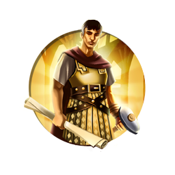
Great Engineers
Great Scientists can build an Academy, which gives the tile a Science Science income boost.
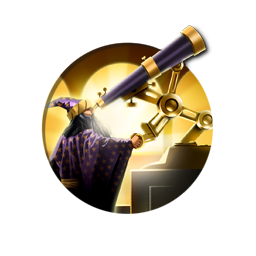
Great Scientists
Great Artists can build a Landmark (prior to Brave New World), which gives the tile a Culture Culture income.
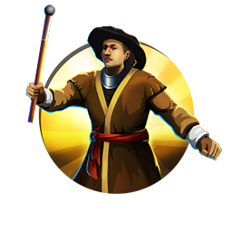
Great Artists
Great Generals can build a Citadel, which gives any military unit stationed on it a large defense bonus.
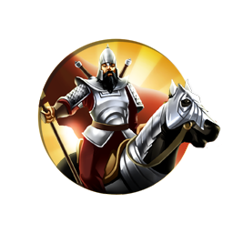
Great Generals
Great Prophets (introduced in Gods & Kings) can create a Holy Site, which provides Faith Faith.
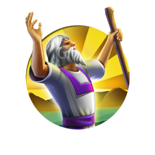
Great Prophets
The building of these special improvements consumes the Great Person, removing them from the game.
Technologies & Research
Computer Logo
Civilization V comes with 74 technologies divided into seven eras, from Ancient Era to Future Era. In single-player games, the discovery of each tech is accompanied by a famous quotation from history that is voiced by William Morgan Sheppard.
Although technology trading has been removed, a new feature was added: making a research agreement. Two civilizations at peace can form one for an initial investment in gold, and as long as the two civilizations remain at peace, the research agreement provides both of them with a research points boost after a set amount of turns. The amount of the research points equals half the median value of costs between the technologies available for this particular civilization. The amount of the research points could be increased with wonders and social policies. However, this can be used simply to make the other civilization spend money before declaring war. Even the AI is known to use this.
Social Policies
In Civilization V there is the ability to adopt social policies through accumulated culture. There are ten separate trees of social policies, and filling out five of the ten rewards the player with Cultural victory. Instead of switching one policy with another, some policies build on others. Each policy has its own bonuses, such as starting a Golden Age.
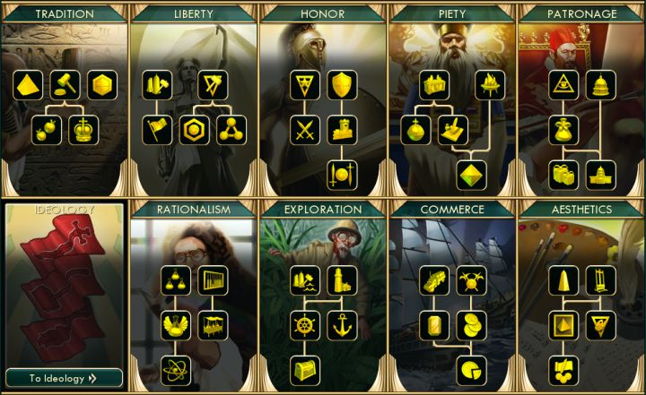
Social Policies List
In Brave New World, there are also Ideologies - end-game uber Social Policies, which not only grant powerful bonuses, but also impact a civilization's standing in the world and its relations with other civilizations. Unlike Social Policies, Ideologies compete with each other on a world level.
Victory Conditions
Once again, there are many ways to achieve victory other than military conquest. You can win by focusing mainly on scientific research and be the first to assemble and launch a spaceship to Alpha Centauri. Diplomatic victory requires help from other Civilizations and City-States in the United Nations and the World Congress in later expansions. Cultural victory now requires to complete five out of ten of the social policy "trees" and completing the Utopia Project or becoming influential over other civilizations with tourism in the Brave New World expansion. Obviously, World Domination is one option, but the victory condition has been simplified compared to the other games. Rather than completely destroying the other civilizations, the player who gains control of all capitals wins. You can also win by having the highest score at the year 2050 AD.